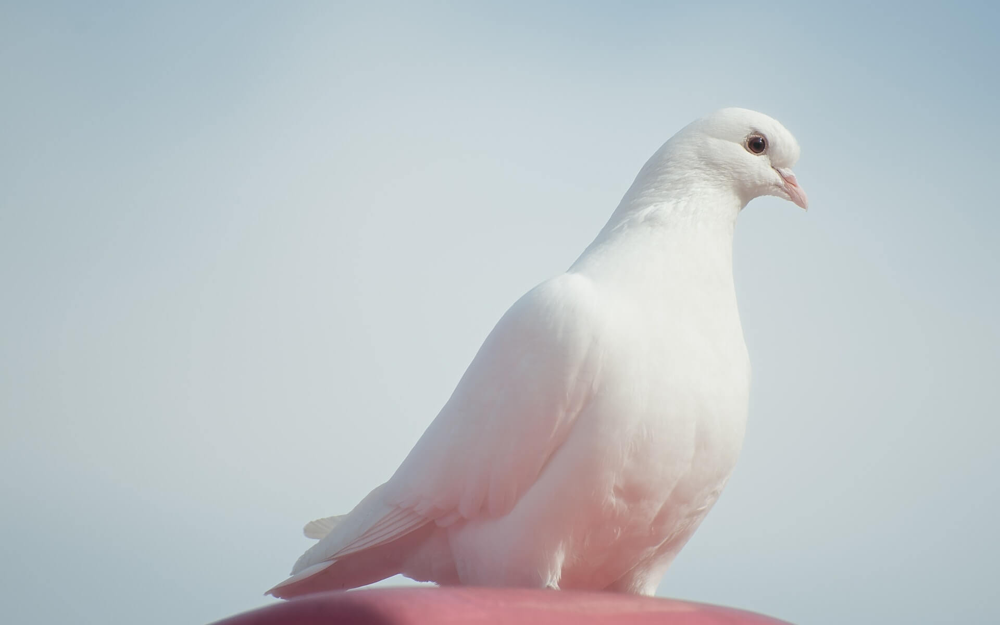

első oldal

Menyét:Testhossza 15-26 centiméter, vállmagassága 3-4 centiméter,
farokhossza 3-7 centiméter. A
hím legfeljebb testtömege 250 gramm, a nőstényé legfeljebb 110 gramm. Még ha a menyét hasonlít is rokonára,
a
hermelinre, kisebb nála és nincs fekete farok-vége; azonkívül teste hullámosan ívelt; éles határvonal
húzódik
fehér hasa és vörhenyesbarna felső része között.

Galamb: A tipikus galambok elsősorban magevők, a magokat a talajról szedegetik fel
és azokat
erős zúzájuk őrli meg. Egyes évszakokban fogyaszthatnak zöld leveleket, rügyeket, virágokat és kevés gyümölcsöt
is. Táplálkozásuknál fogva több faj komoly mezőgazdasági kártevővé válhat, mind az érő termés fogyasztásával,
mind az elvetett mag kiszedegetésével.
A gyümölcsgalambok szinte kizárólag erdei gyümölcsök húsos részeivel táplálkoznak.
Egyes fajok kisebb mennyiségben csigákat vagy más gerinctelen állatokat is fogyaszthatnak, főként a költési
időszakban.
A magevő fajoknak rendszeresen inniuk kell. Más madarak többségétől eltérően a galambok nem kortyonként isznak,
hanem csaknem az orrnyílásukig vízbe dugják a csőrüket és így szívják fel folyamatosan a vizet.
A galambok hangja fajonként rendkívül változatos. Búgnak, burukkolnak, turbékolnak, kacagnak. Egyes fajok
füttyhöz hasonló vagy rekedt hangra is képesek, de igazán hangosan kiáltani egyik faj sem tud. Úgy tűnik, hogy
riasztó hangjuk nincs. Meneküléskor erősebben csapkodnak szárnyaikkal és azok csattogó hangja jeladás a többi
egyed számára.[2]
táblázat
| 1 |
2 |
3 |
4 |
5 |
6 |
| 1 |
2 |
3 |
4 |
5 |
6 |